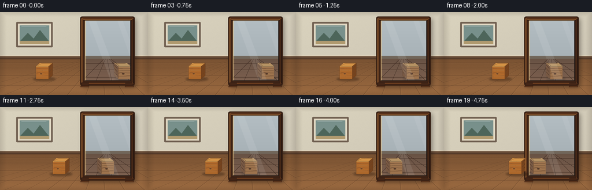
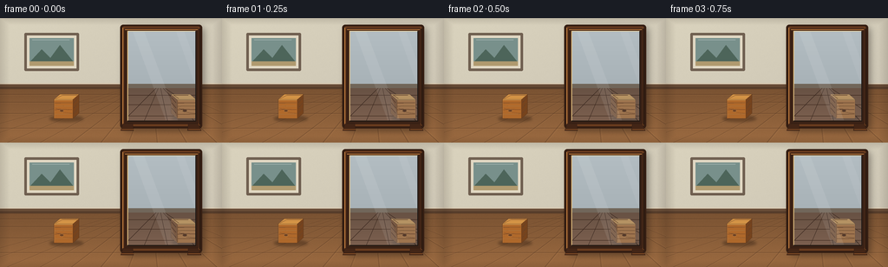

CODING AGENTS AS PIXEL WORLD MODELS
traex/GPT-5.6-Sol · phygen_061
点击播放 · 原生 RGB 像素
逐轮保存的候选
回放视频、检查图与代码变化。
每份候选均可单独播放。实际图片检查记录在下方工具轨迹中。
候选 01播放与检查图
点击播放 · 原生 RGB 像素

展开代码变化
--- 上一保存版本
+++ 本次保存版本
@@ -0,0 +1,278 @@
+from pathlib import Path
+import math
+import numpy as np
+from PIL import Image, ImageDraw, ImageFilter
+import artifact_io
+
+# Deterministic, hand-rendered 2.5D scene. Geometry is authored at 256x144
+# and supersampled for clean edges.
+W, H, N = 256, 144, 20
+SS = 4
+rng = np.random.default_rng(61061)
+
+
+def sc(v):
+ return int(round(v * SS))
+
+
+def pts(seq):
+ return [(sc(x), sc(y)) for x, y in seq]
+
+
+def rect(draw, box, **kw):
+ draw.rectangle(tuple(sc(v) for v in box), **kw)
+
+
+def roundrect(draw, box, radius, **kw):
+ draw.rounded_rectangle(tuple(sc(v) for v in box), radius=sc(radius), **kw)
+
+
+def ellipse(draw, box, **kw):
+ draw.ellipse(tuple(sc(v) for v in box), **kw)
+
+
+def line(draw, xy, **kw):
+ if 'width' in kw:
+ kw['width'] = max(1, sc(kw['width']))
+ draw.line(pts(xy), **kw)
+
+
+def poly(draw, xy, **kw):
+ draw.polygon(pts(xy), **kw)
+
+
+def make_room():
+ """Static room, excluding the mirror and moving block."""
+ yy, xx = np.mgrid[0:H*SS, 0:W*SS]
+ horizon = sc(80)
+ arr = np.empty((H*SS, W*SS, 3), dtype=np.float32)
+
+ # Warm plaster wall, softly illuminated from the upper left.
+ wall_y = np.clip(yy / max(horizon, 1), 0, 1)
+ light = 7.0 * (1.0 - xx/(W*SS)) - 5.0*wall_y
+ arr[..., 0] = 211 + light
+ arr[..., 1] = 204 + light
+ arr[..., 2] = 185 + light * .65
+
+ # Oak floor below the horizon.
+ floor = yy >= horizon
+ fy = np.clip((yy-horizon) / sc(H-80), 0, 1)
+ arr[..., 0] = np.where(floor, 121 + 35*fy, arr[..., 0])
+ arr[..., 1] = np.where(floor, 82 + 25*fy, arr[..., 1])
+ arr[..., 2] = np.where(floor, 50 + 15*fy, arr[..., 2])
+
+ # Fine physical texture, fixed in world space (no temporal shimmer).
+ noise_small = rng.normal(0, 1.8, (H*SS, W*SS))
+ # blur into painterly plaster/wood texture
+ ni = Image.fromarray(np.uint8(np.clip(noise_small*16+128,0,255))).filter(ImageFilter.GaussianBlur(sc(.35)))
+ noise = (np.asarray(ni, dtype=np.float32)-128)/16
+ arr += noise[..., None]
+ arr = np.clip(arr, 0, 255).astype(np.uint8)
+ img = Image.fromarray(arr, 'RGB')
+ d = ImageDraw.Draw(img, 'RGBA')
+
+ # Subtle wall vignette and baseboard.
+ rect(d, (0, 75, 256, 81), fill=(104, 76, 54, 255))
+ rect(d, (0, 75, 256, 76.2), fill=(238, 228, 205, 210))
+ rect(d, (0, 79.5, 256, 82), fill=(72, 49, 36, 150))
+
+ # Floorboards in perspective, converging to a point near the mirror.
+ for x0 in [-80, -35, 8, 46, 82, 116, 148, 181, 215, 250, 292, 340]:
+ xh = 174 + (x0-174)*0.10
+ line(d, [(xh, 81), (x0, 144)], fill=(61, 38, 25, 105), width=.55)
+ line(d, [(xh+1, 81), (x0+2, 144)], fill=(212, 155, 93, 35), width=.45)
+ # horizontal plank joints become farther apart toward camera
+ for y in [88, 97, 110, 127]:
+ line(d, [(0, y), (256, y)], fill=(66, 41, 27, 100), width=.6)
+ line(d, [(0, y+1), (256, y+1)], fill=(218, 160, 101, 26), width=.45)
+
+ # A restrained framed picture to reinforce that this is an indoor scene.
+ roundrect(d, (28, 17, 91, 61), 1.5, fill=(69, 49, 36, 180))
+ rect(d, (31, 20, 88, 58), fill=(225, 216, 195, 255))
+ rect(d, (34, 23, 85, 55), fill=(120, 144, 139, 255))
+ poly(d, [(34,51),(48,36),(58,46),(69,31),(85,51)], fill=(73, 97, 86, 235))
+ rect(d, (34, 50, 85, 55), fill=(176, 154, 111, 255))
+ line(d, [(37,25),(80,25)], fill=(255,255,255,80), width=.7)
+
+ # Soft room vignette.
+ vig = Image.new('RGBA', img.size, (0,0,0,0))
+ vd = ImageDraw.Draw(vig, 'RGBA')
+ for k in range(16):
+ alpha = int(2.0*(16-k))
+ vd.rectangle((sc(k*.7),sc(k*.5),sc(256-k*.7),sc(144-k*.5)), outline=(28,18,12,alpha), width=sc(1))
+ img = Image.alpha_composite(img.convert('RGBA'), vig)
+ return img
+
+
+def draw_cube(layer, cx, bottom, reflected=False, opacity=255):
+ """Draw a detailed wooden cube. Mirroring reverses its visible side face."""
+ d = ImageDraw.Draw(layer, 'RGBA')
+ sgn = -1 if reflected else 1
+ # Cube dimensions and an oblique depth vector.
+ left, right = cx - 12, cx + 10
+ top, bot = bottom - 22, bottom
+ dx, dy = 7*sgn, -6
+
+ # Contact shadow. It is deliberately attached to the same transformed
+ # position as the block, including in the mirror.
+ shadow = Image.new('RGBA', layer.size, (0,0,0,0))
+ sd = ImageDraw.Draw(shadow, 'RGBA')
+ if reflected:
+ ellipse(sd, (cx-18, bottom-3, cx+15, bottom+3), fill=(35,48,54,int(70*opacity/255)))
+ else:
+ ellipse(sd, (cx-17, bottom-3, cx+22, bottom+3.5), fill=(47,25,12,int(105*opacity/255)))
+ shadow = shadow.filter(ImageFilter.GaussianBlur(sc(1.4)))
+ layer.alpha_composite(shadow)
+ d = ImageDraw.Draw(layer, 'RGBA')
+
+ # Coordinates: front face plus top and the receding side.
+ front = [(left,top),(right,top),(right,bot),(left,bot)]
+ topface = [(left,top),(left+dx,top+dy),(right+dx,top+dy),(right,top)]
+ if not reflected:
+ side = [(right,top),(right+dx,top+dy),(right+dx,bot+dy),(right,bot)]
+ else:
+ side = [(left,top),(left+dx,top+dy),(left+dx,bot+dy),(left,bot)]
+
+ tint = .86 if reflected else 1.0
+ def C(rgb, a=255):
+ # Reflections are cooler and slightly less contrasty.
+ if reflected:
+ rgb = (int(rgb[0]*.72+42), int(rgb[1]*.78+43), int(rgb[2]*.87+47))
+ return (*rgb, int(a*opacity/255))
+
+ # Side face first, then top and front, for crisp occlusion.
+ poly(d, side, fill=C((118,67,29)), outline=C((65,38,21),220))
+ poly(d, topface, fill=C((211,147,70)), outline=C((87,50,24),240))
+ poly(d, front, fill=C((176,105,43)), outline=C((75,42,20),245))
+
+ # Broad, natural wood grain on front. Grain is object-attached and thus
+ # moves consistently instead of swimming across the surface.
+ grain = [(top+4, (132,72,27), 135), (top+8, (226,157,72), 100),
+ (top+12, (119,61,25), 120), (top+17, (223,143,59), 80)]
+ for gy, col, a in grain:
+ wobble = 0.7*math.sin(gy*1.7)
+ line(d, [(left+1,gy),(cx-4,gy+wobble),(right-1,gy-.35)], fill=C(col,a), width=.65)
+ # Knot and curved grain rings.
+ kx, ky = cx-3, top+13
+ ellipse(d, (kx-2.4,ky-1.4,kx+2.4,ky+1.5), fill=C((91,45,20),145), outline=C((235,161,72),100), width=sc(.45))
+ line(d, [(left+2,ky-3),(kx-4,ky-2),(kx-1,ky-2.1)], fill=C((102,53,22),100), width=.5)
+ line(d, [(kx+2,ky+2),(right-1,ky+3)], fill=C((105,54,22),100), width=.5)
+
+ # Grain on top and side emphasizes the mirrored orientation.
+ line(d, [(left+2,top-1),(left+dx+3,top+dy+1),(right+dx-2,top+dy+1)], fill=C((111,61,27),100), width=.55)
+ if not reflected:
+ for off in [4,10,16]:
+ line(d, [(right+1,top+off),(right+dx-1,top+dy+off)], fill=C((64,35,20),110), width=.5)
+ else:
+ for off in [4,10,16]:
+ line(d, [(left-1,top+off),(left+dx+1,top+dy+off)], fill=C((64,35,20),110), width=.5)
+
+ # Edge highlights make the block solid and readable at low resolution.
+ line(d, [(left+.5,top+.5),(right-.5,top+.5)], fill=C((255,190,95),180), width=.65)
+ line(d, [(left+.5,top+1),(left+.5,bot-1)], fill=C((233,150,64),90), width=.55)
+
+
+def draw_mirror_and_reflection(base, real_x, block_bottom):
+ """Place the upright mirror and clip the physically paired block to glass."""
+ # Broad cast shadow from mirror frame onto wall/floor.
+ sh = Image.new('RGBA', base.size, (0,0,0,0))
+ sd = ImageDraw.Draw(sh, 'RGBA')
+ roundrect(sd, (143,11,235,130), 3, fill=(28,20,15,110))
+ sh = sh.filter(ImageFilter.GaussianBlur(sc(4.0)))
+ base.alpha_composite(sh)
+
+ d = ImageDraw.Draw(base, 'RGBA')
+ # Back silhouette and substantial walnut frame.
+ roundrect(d, (138.5,7.5,233,127.5), 3.5, fill=(54,31,19,255))
+ roundrect(d, (140,8.5,231.5,126), 3, fill=(104,59,30,255), outline=(49,28,18,255), width=sc(1))
+ # Carved frame bands.
+ roundrect(d, (143,11.5,229,122.5), 1.8, fill=(58,33,21,255))
+ line(d, [(144,13),(228,13)], fill=(191,125,63,170), width=1.0)
+ line(d, [(141.5,11),(141.5,122)], fill=(214,143,72,110), width=.8)
+ line(d, [(230,12),(230,123)], fill=(35,20,14,180), width=1.1)
+
+ # Glass interior is a cool reflection of wall and floor.
+ glass = Image.new('RGBA', base.size, (0,0,0,0))
+ gd = ImageDraw.Draw(glass, 'RGBA')
+ rect(gd, (147,15,225.5,118.5), fill=(171,190,192,255))
+ # reflected wall gradient bands
+ for y in range(15,80):
+ c = int(194 - (y-15)*.18)
+ rect(gd, (147,y,225.5,y+1), fill=(c-15,c-5,c,255))
+ rect(gd, (147,76,225.5,81), fill=(113,102,90,255))
+ # reflected floor, dimmer/cooler than real room
+ for y in range(81,119):
+ q = (y-81)/38
+ rect(gd, (147,y,225.5,y+1), fill=(104+int(20*q),82+int(14*q),68+int(11*q),255))
+ # Perspective seams continue inside reflection.
+ for x0 in [142,166,193,224,247]:
+ xh = 184 + (x0-184)*.10
+ line(gd, [(xh,81),(x0,119)], fill=(53,50,47,85), width=.45)
+ for y in [89,100,113]:
+ line(gd, [(147,y),(226,y)], fill=(55,48,43,68), width=.45)
+
+ # Reflection moves the exact opposite displacement about mirror plane x=145.
+ reflected_x = 2*145.0 - real_x
+ draw_cube(glass, reflected_x, block_bottom, reflected=True, opacity=232)
+
+ # A faint duplicate cast in the silvering adds optical softness.
+ # (Cube itself remains crisp enough to identify.)
+ glare = Image.new('RGBA', base.size, (0,0,0,0))
+ gld = ImageDraw.Draw(glare, 'RGBA')
+ poly(gld, [(153,15),(166,15),(205,118),(191,118)], fill=(255,255,255,21))
+ poly(gld, [(203,15),(212,15),(225,50),(225,77)], fill=(255,255,255,15))
+ glass = Image.alpha_composite(glass, glare)
+
+ # Strict glass clipping gives an unmistakable in-mirror reflection.
+ mask = Image.new('L', base.size, 0)
+ md = ImageDraw.Draw(mask)
+ md.rounded_rectangle((sc(147),sc(15),sc(225.5),sc(118.5)), radius=sc(1.0), fill=255)
+ glass.putalpha(Image.composite(glass.getchannel('A'), Image.new('L',base.size,0), mask))
+ base.alpha_composite(glass)
+
+ # Inner bevel overlays the glass edges.
+ d = ImageDraw.Draw(base, 'RGBA')
+ line(d, [(147,15),(225.5,15)], fill=(238,222,178,150), width=.8)
+ line(d, [(147,15),(147,119)], fill=(227,192,128,130), width=.9)
+ line(d, [(225.5,15),(225.5,119)], fill=(28,24,22,210), width=1.0)
+ line(d, [(147,119),(226,119)], fill=(35,25,19,220), width=1.3)
+
+ # Decorative feet establish that the mirror is upright on the floor.
+ poly(d, [(142,122),(153,122),(154,130),(139,130)], fill=(66,37,22,255), outline=(40,23,16,255))
+ poly(d, [(217,122),(228,122),(232,130),(216,130)], fill=(66,37,22,255), outline=(40,23,16,255))
+ line(d, [(140,128.5),(154,128.5)], fill=(185,111,53,80), width=.6)
+ line(d, [(217,128.5),(231,128.5)], fill=(185,111,53,80), width=.6)
+
+
+def render_frame(i, room):
+ # Constant-speed translation makes synchrony especially easy to perceive.
+ t = i/(N-1)
+ real_x = 74.0 + 50.0*t
+ bottom = 116.0
+ frame = room.copy()
+
+ # Mirror/reflection first, then the real object in front of it.
+ draw_mirror_and_reflection(frame, real_x, bottom)
+ block_layer = Image.new('RGBA', frame.size, (0,0,0,0))
+ draw_cube(block_layer, real_x, bottom, reflected=False, opacity=255)
+ frame.alpha_composite(block_layer)
+
+ # A tiny warm floor bounce under the real block.
+ bounce = Image.new('RGBA', frame.size, (0,0,0,0))
+ bd = ImageDraw.Draw(bounce, 'RGBA')
+ ellipse(bd, (real_x-13,114,real_x+17,119), fill=(255,168,74,18))
+ bounce = bounce.filter(ImageFilter.GaussianBlur(sc(2)))
+ frame.alpha_composite(bounce)
+
+ # Downsample with a high-quality filter to 256x144 RGB.
+ return np.asarray(frame.convert('RGB').resize((W,H), Image.Resampling.LANCZOS), dtype=np.uint8)
+
+
+def main():
+ room = make_room()
+ frames = np.stack([render_frame(i, room) for i in range(N)], axis=0)
+ artifact_io.save(frames, Path(__file__).resolve().parent)
+
+
+if __name__ == '__main__':
+ main()
候选 02播放与检查图
点击播放 · 原生 RGB 像素


展开代码变化
--- 上一保存版本
+++ 本次保存版本
@@ -68,7 +68,7 @@
noise = (np.asarray(ni, dtype=np.float32)-128)/16
arr += noise[..., None]
arr = np.clip(arr, 0, 255).astype(np.uint8)
- img = Image.fromarray(arr, 'RGB')
+ img = Image.fromarray(arr)
d = ImageDraw.Draw(img, 'RGBA')
# Subtle wall vignette and baseboard.
可观测工具轨迹
实际执行的命令与返回图片。
命令 1exit 0
/bin/bash -lc "ls -la && printf '\\n--- prompt.txt ---\\n' && cat prompt.txt && printf '\\n--- GENERATION_RULES.md ---\\n' && cat GENERATION_RULES.md && printf '\\n--- task_spec.json ---\\n' && cat task_spec.json"
命令 2exit 0
/bin/bash -lc "find . -maxdepth 2 -type f -not -path './.git/*' -printf '%p\\n' | sort"
命令 3exit 0
/bin/bash -lc "command -v ffmpeg || true; command -v blender || true; command -v python3 || true; python3 - <<'PY' mods=['numpy','cv2','PIL','scipy','imageio','matplotlib'] for m in mods: try: x=__import__(m); print(m, getattr(x,'__version__','ok')) except Exception as e: print(m,'NO',e) PY"
命令 4exit 0
/bin/bash -lc "sed -n '1,240p' artifact_io.py"
命令 5exit 0
/bin/bash -lc "cat > generate.py <<'PY'
from pathlib import Path
import math
import numpy as np
from PIL import Image, ImageDraw, ImageFilter
import artifact_io
# Deterministic, hand-rendered 2.5D scene. Geometry is authored at 256x144
# and supersampled for clean edges.
W, H, N = 256, 144, 20
SS = 4
rng = np.random.default_rng(61061)
def sc(v):
return int(round(v * SS))
def pts(seq):
return [(sc(x), sc(y)) for x, y in seq]
def rect(draw, box, **kw):
draw.rectangle(tuple(sc(v) for v in box), **kw)
def roundrect(draw, box, radius, **kw):
draw.rounded_rectangle(tuple(sc(v) for v in box), radius=sc(radius), **kw)
def ellipse(draw, box, **kw):
draw.ellipse(tuple(sc(v) for v in box), **kw)
def line(draw, xy, **kw):
if 'width' in kw:
kw['width'] = max(1, sc(kw['width']))
draw.line(pts(xy), **kw)
def poly(draw, xy, **kw):
draw.polygon(pts(xy), **kw)
def make_room():
\"\"\"Static room, excluding the mirror and moving block.\"\"\"
yy, xx = np.mgrid[0:H*SS, 0:W*SS]
horizon = sc(80)
arr = np.empty((H*SS, W*SS, 3), dtype=np.float32)
# Warm plaster wall, softly illuminated from the upper left.
wall_y = np.clip(yy / max(horizon, 1), 0, 1)
light = 7.0 * (1.0 - xx/(W*SS)) - 5.0*wall_y
arr[..., 0] = 211 + light
arr[..., 1] = 204 + light
arr[..., 2] = 185 + light * .65
# Oak floor below the horizon.
floor = yy >= horizon
fy = np.clip((yy-horizon) / sc(H-80), 0, 1)
arr[..., 0] = np.where(floor, 121 + 35*fy, arr[..., 0])
arr[..., 1] = np.where(floor, 82 + 25*fy, arr[..., 1])
arr[..., 2] = np.where(floor, 50 + 15*fy, arr[..., 2])
# Fine physical texture, fixed in world space (no temporal shimmer).
noise_small = rng.normal(0, 1.8, (H*SS, W*SS))
# blur into painterly plaster/wood texture
ni = Image.fromarray(np.uint8(np.clip(noise_small*16+128,0,255))).filter(ImageFilter.GaussianBlur(sc(.35)))
noise = (np.asarray(ni, dtype=np.float32)-128)/16
arr += noise[..., None]
arr = np.clip(arr, 0, 255).astype(np.uint8)
img = Image.fromarray(arr, 'RGB')
d = ImageDraw.Draw(img, 'RGBA')
# Subtle wall vignette and baseboard.
rect(d, (0, 75, 256, 81), fill=(104, 76, 54, 255))
rect(d, (0, 75, 256, 76.2), fill=(238, 228, 205, 210))
rect(d, (0, 79.5, 256, 82), fill=(72, 49, 36, 150))
# Floorboards in perspective, converging to a point near the mirror.
for x0 in [-80, -35, 8, 46, 82, 116, 148, 181, 215, 250, 292, 340]:
xh = 174 + (x0-174)*0.10
line(d, [(xh, 81), (x0, 144)], fill=(61, 38, 25, 105), width=.55)
line(d, [(xh+1, 81), (x0+2, 144)], fill=(212, 155, 93, 35), width=.45)
# horizontal plank joints become farther apart toward camera
for y in [88, 97, 110, 127]:
line(d, [(0, y), (256, y)], fill=(66, 41, 27, 100), width=.6)
line(d, [(0, y+1), (256, y+1)], fill=(218, 160, 101, 26), width=.45)
# A restrained framed picture to reinforce that this is an indoor scene.
roundrect(d, (28, 17, 91, 61), 1.5, fill=(69, 49, 36, 180))
rect(d, (31, 20, 88, 58), fill=(225, 216, 195, 255))
rect(d, (34, 23, 85, 55), fill=(120, 144, 139, 255))
poly(d, [(34,51),(48,36),(58,46),(69,31),(85,51)], fill=(73, 97, 86, 235))
rect(d, (34, 50, 85, 55), fill=(176, 154, 111, 255))
line(d, [(37,25),(80,25)], fill=(255,255,255,80), width=.7)
# Soft room vignette.
vig = Image.new('RGBA', img.size, (0,0,0,0))
vd = ImageDraw.Draw(vig, 'RGBA')
for k in range(16):
alpha = int(2.0*(16-k))
vd.rectangle((sc(k*.7),sc(k*.5),sc(256-k*.7),sc(144-k*.5)), outline=(28,18,12,alpha), width=sc(1))
img = Image.alpha_composite(img.convert('RGBA'), vig)
return img
def draw_cube(layer, cx, bottom, reflected=False, opacity=255):
\"\"\"Draw a detailed wooden cube. Mirroring reverses its visible side face.\"\"\"
d = ImageDraw.Draw(layer, 'RGBA')
sgn = -1 if reflected else 1
# Cube dimensions and an oblique depth vector.
left, right = cx - 12, cx + 10
top, bot = bottom - 22, bottom
dx, dy = 7*sgn, -6
# Contact shadow. It is deliberately attached to the same transformed
# position as the block, including in the mirror.
shadow = Image.new('RGBA', layer.size, (0,0,0,0))
sd = ImageDraw.Draw(shadow, 'RGBA')
if reflected:
ellipse(sd, (cx-18, bottom-3, cx+15, bottom+3), fill=(35,48,54,int(70*opacity/255)))
else:
ellipse(sd, (cx-17, bottom-3, cx+22, bottom+3.5), fill=(47,25,12,int(105*opacity/255)))
shadow = shadow.filter(ImageFilter.GaussianBlur(sc(1.4)))
layer.alpha_composite(shadow)
d = ImageDraw.Draw(layer, 'RGBA')
# Coordinates: front face plus top and the receding side.
front = [(left,top),(right,top),(right,bot),(left,bot)]
topface = [(left,top),(left+dx,top+dy),(right+dx,top+dy),(right,top)]
if not reflected:
side = [(right,top),(right+dx,top+dy),(right+dx,bot+dy),(right,bot)]
else:
side = [(left,top),(left+dx,top+dy),(left+dx,bot+dy),(left,bot)]
tint = .86 if reflected else 1.0
def C(rgb, a=255):
# Reflections are cooler and slightly less contrasty.
if reflected:
rgb = (int(rgb[0]*.72+42), int(rgb[1]*.78+43), int(rgb[2]*.87+47))
return (*rgb, int(a*opacity/255))
# Side face first, then top and front, for crisp occlusion.
poly(d, side, fill=C((118,67,29)), outline=C((65,38,21),220))
poly(d, topface, fill=C((211,147,70)), outline=C((87,50,24),240))
poly(d, front, fill=C((176,105,43)), outline=C((75,42,20),245))
# Broad, natural wood grain on front. Grain is object-attached and thus
# moves consistently instead of swimming across the surface.
grain = [(top+4, (132,72,27), 135), (top+8, (226,157,72), 100),
(top+12, (119,61,25), 120), (top+17, (223,143,59), 80)]
for gy, col, a in grain:
wobble = 0.7*math.sin(gy*1.7)
line(d, [(left+1,gy),(cx-4,gy+wobble),(right-1,gy-.35)], fill=C(col,a), width=.65)
# Knot and curved grain rings.
kx, ky = cx-3, top+13
ellipse(d, (kx-2.4,ky-1.4,kx+2.4,ky+1.5), fill=C((91,45,20),145), outline=C((235,161,72),100), width=sc(.45))
line(d, [(left+2,ky-3),(kx-4,ky-2),(kx-1,ky-2.1)], fill=C((102,53,22),100), width=.5)
line(d, [(kx+2,ky+2),(right-1,ky+3)], fill=C((105,54,22),100), width=.5)
# Grain on top and side emphasizes the mirrored orientation.
line(d, [(left+2,top-1),(left+dx+3,top+dy+1),(right+dx-2,top+dy+1)], fill=C((111,61,27),100), width=.55)
if not reflected:
for off in [4,10,16]:
line(d, [(right+1,top+off),(right+dx-1,top+dy+off)], fill=C((64,35,20),110), width=.5)
else:
for off in [4,10,16]:
line(d, [(left-1,top+off),(left+dx+1,top+dy+off)], fill=C((64,35,20),110), width=.5)
# Edge highlights make the block solid and readable at low resolution.
line(d, [(left+.5,top+.5),(right-.5,top+.5)], fill=C((255,190,95),180), width=.65)
line(d, [(left+.5,top+1),(left+.5,bot-1)], fill=C((233,150,64),90), width=.55)
def draw_mirror_and_reflection(base, real_x, block_bottom):
\"\"\"Place the upright mirror and clip the physically paired block to glass.\"\"\"
# Broad cast shadow from mirror frame onto wall/floor.
sh = Image.new('RGBA', base.size, (0,0,0,0))
sd = ImageDraw.Draw(sh, 'RGBA')
roundrect(sd, (143,11,235,130), 3, fill=(28,20,15,110))
sh = sh.filter(ImageFilter.GaussianBlur(sc(4.0)))
base.alpha_composite(sh)
d = ImageDraw.Draw(base, 'RGBA')
# Back silhouette and substantial walnut frame.
roundrect(d, (138.5,7.5,233,127.5), 3.5, fill=(54,31,19,255))
roundrect(d, (140,8.5,231.5,126), 3, fill=(104,59,30,255), outline=(49,28,18,255), width=sc(1))
# Carved frame bands.
roundrect(d, (143,11.5,229,122.5), 1.8, fill=(58,33,21,255))
line(d, [(144,13),(228,13)], fill=(191,125,63,170), width=1.0)
line(d, [(141.5,11),(141.5,122)], fill=(214,143,72,110), width=.8)
line(d, [(230,12),(230,123)], fill=(35,20,14,180), width=1.1)
# Glass interior is a cool reflection of wall and floor.
glass = Image.new('RGBA', base.size, (0,0,0,0))
gd = ImageDraw.Draw(glass, 'RGBA')
rect(gd, (147,15,225.5,118.5), fill=(171,190,192,255))
# reflected wall gradient bands
for y in range(15,80):
c = int(194 - (y-15)*.18)
rect(gd, (147,y,225.5,y+1), fill=(c-15,c-5,c,255))
rect(gd, (147,76,225.5,81), fill=(113,102,90,255))
# reflected floor, dimmer/cooler than real room
for y in range(81,119):
q = (y-81)/38
rect(gd, (147,y,225.5,y+1), fill=(104+int(20*q),82+int(14*q),68+int(11*q),255))
# Perspective seams continue inside reflection.
for x0 in [142,166,193,224,247]:
xh = 184 + (x0-184)*.10
line(gd, [(xh,81),(x0,119)], fill=(53,50,47,85), width=.45)
for y in [89,100,113]:
line(gd, [(147,y),(226,y)], fill=(55,48,43,68), width=.45)
# Reflection moves the exact opposite displacement about mirror plane x=145.
reflected_x = 2*145.0 - real_x
draw_cube(glass, reflected_x, block_bottom, reflected=True, opacity=232)
# A faint duplicate cast in the silvering adds optical softness.
# (Cube itself remains crisp enough to identify.)
glare = Image.new('RGBA', base.size, (0,0,0,0))
gld = ImageDraw.Draw(glare, 'RGBA')
poly(gld, [(153,15),(166,15),(205,118),(191,118)], fill=(255,255,255,21))
poly(gld, [(203,15),(212,15),(225,50),(225,77)], fill=(255,255,255,15))
glass = Image.alpha_composite(glass, glare)
# Strict glass clipping gives an unmistakable in-mirror reflection.
mask = Image.new('L', base.size, 0)
md = ImageDraw.Draw(mask)
md.rounded_rectangle((sc(147),sc(15),sc(225.5),sc(118.5)), radius=sc(1.0), fill=255)
glass.putalpha(Image.composite(glass.getchannel('A'), Image.new('L',base.size,0), mask))
base.alpha_composite(glass)
# Inner bevel overlays the glass edges.
d = ImageDraw.Draw(base, 'RGBA')
line(d, [(147,15),(225.5,15)], fill=(238,222,178,150), width=.8)
line(d, [(147,15),(147,119)], fill=(227,192,128,130), width=.9)
line(d, [(225.5,15),(225.5,119)], fill=(28,24,22,210), width=1.0)
line(d, [(147,119),(226,119)], fill=(35,25,19,220), width=1.3)
# Decorative feet establish that the mirror is upright on the floor.
poly(d, [(142,122),(153,122),(154,130),(139,130)], fill=(66,37,22,255), outline=(40,23,16,255))
poly(d, [(217,122),(228,122),(232,130),(216,130)], fill=(66,37,22,255), outline=(40,23,16,255))
line(d, [(140,128.5),(154,128.5)], fill=(185,111,53,80), width=.6)
line(d, [(217,128.5),(231,128.5)], fill=(185,111,53,80), width=.6)
def render_frame(i, room):
# Constant-speed translation makes synchrony especially easy to perceive.
t = i/(N-1)
real_x = 74.0 + 50.0*t
bottom = 116.0
frame = room.copy()
# Mirror/reflection first, then the real object in front of it.
draw_mirror_and_reflection(frame, real_x, bottom)
block_layer = Image.new('RGBA', frame.size, (0,0,0,0))
draw_cube(block_layer, real_x, bottom, reflected=False, opacity=255)
frame.alpha_composite(block_layer)
# A tiny warm floor bounce under the real block.
bounce = Image.new('RGBA', frame.size, (0,0,0,0))
bd = ImageDraw.Draw(bounce, 'RGBA')
ellipse(bd, (real_x-13,114,real_x+17,119), fill=(255,168,74,18))
bounce = bounce.filter(ImageFilter.GaussianBlur(sc(2)))
frame.alpha_composite(bounce)
# Downsample with a high-quality filter to 256x144 RGB.
return np.asarray(frame.convert('RGB').resize((W,H), Image.Resampling.LANCZOS), dtype=np.uint8)
def main():
room = make_room()
frames = np.stack([render_frame(i, room) for i in range(N)], axis=0)
artifact_io.save(frames, Path(__file__).resolve().parent)
if __name__ == '__main__':
main()
PY
python3 generate.py
ls -lh pixels.npz inspection.png transition_check.png index.html frames/00.png frames/19.png"命令 6exit 1
/bin/bash -lc "python3 - <<'PY'
from pathlib import Path
import numpy as np
from PIL import Image
z=np.load('pixels.npz')['pixels']
print('packed tensor:',z.shape,z.dtype)
fs=np.stack([np.asarray(Image.open(f'frames/{i:02d}.png').convert('RGB')) for i in range(20)])
print('frames:',fs.shape,fs.dtype,'range',fs.min(),fs.max())
print('mean abs consecutive deltas:',np.mean(np.abs(np.diff(fs.astype(np.int16),axis=0)),axis=(1,2,3)).round(3).tolist())
print('unique frame hashes:',len({__import__('hashlib').sha256(x.tobytes()).hexdigest() for x in fs}))
# Check saved packing matches frames exactly.
p=(fs[...,0].astype(np.uint32)<<16)|(fs[...,1].astype(np.uint32)<<8)|fs[...,2]
print('packing match:',np.array_equal(z,p.transpose(1,2,0)))
PY
# Clean a Pillow deprecation warning without changing rendering.
sed -i \"s/Image.fromarray(arr, 'RGB')/Image.fromarray(arr)/\" generate.py
python3 generate.py >/tmp/gencheck.log 2>&1 && cat /tmp/gencheck.log
"命令 7exit 0
/bin/bash -lc 'python3 generate.py > .tmp/gencheck.log 2>&1; rc=$?; cat .tmp/gencheck.log; echo rc=$rc; python3 - <<'"'PY'
import numpy as np
from PIL import Image
im=np.asarray(Image.open('inspection.png'))
# Create a compact contact strip useful for final local inspection metadata.
print('inspection',im.shape,im.dtype,'mean',im.mean(axis=(0,1)).round(1))
# expected object centers and mirror law
for i in [0,3,6,8,11,14,16,19]:
x=74+50*i/19
print(i, 'real',round(x,2),'reflection',round(290-x,2),'equal_gap',round(145-x,2))
PY
ls -l generate.py pixels.npz index.html inspection.png frames | head -30"保存候选 2 份；完成命令 7 次；可验证图片返回 0 张。原始 API 响应与完整日志保留在本地。